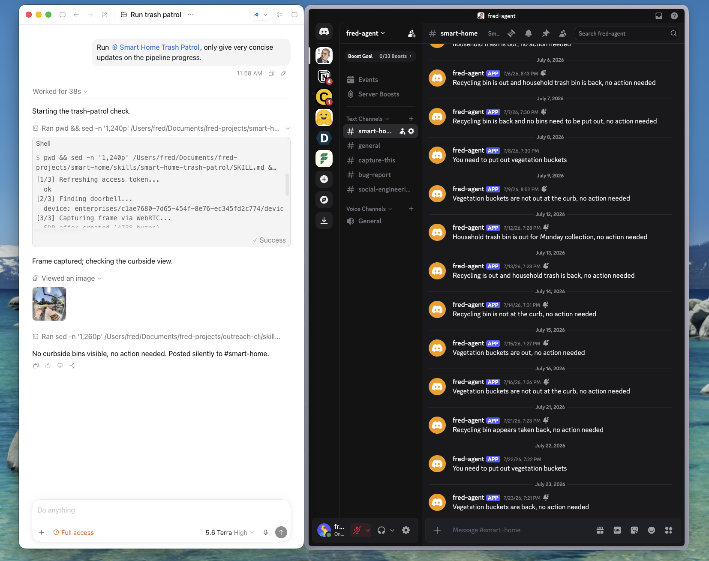
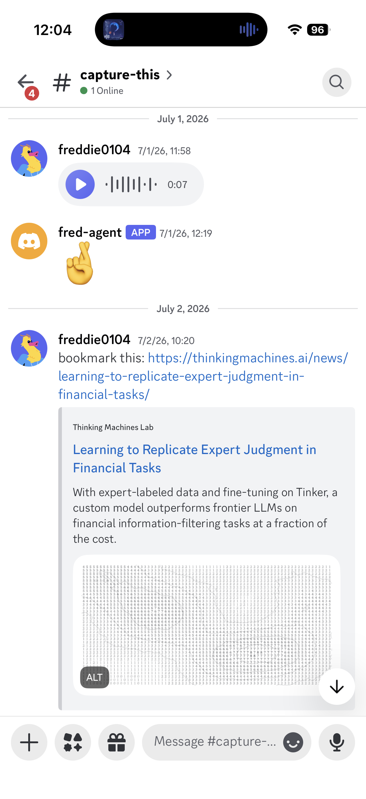
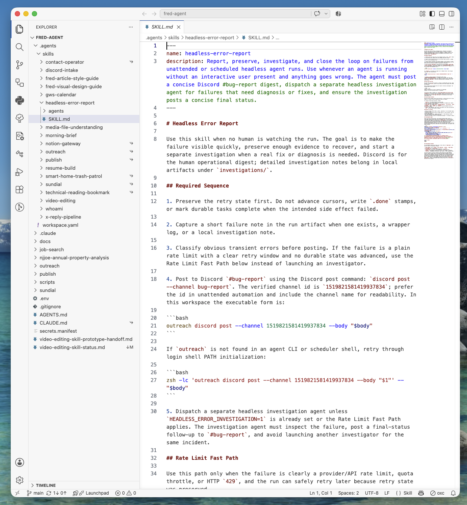
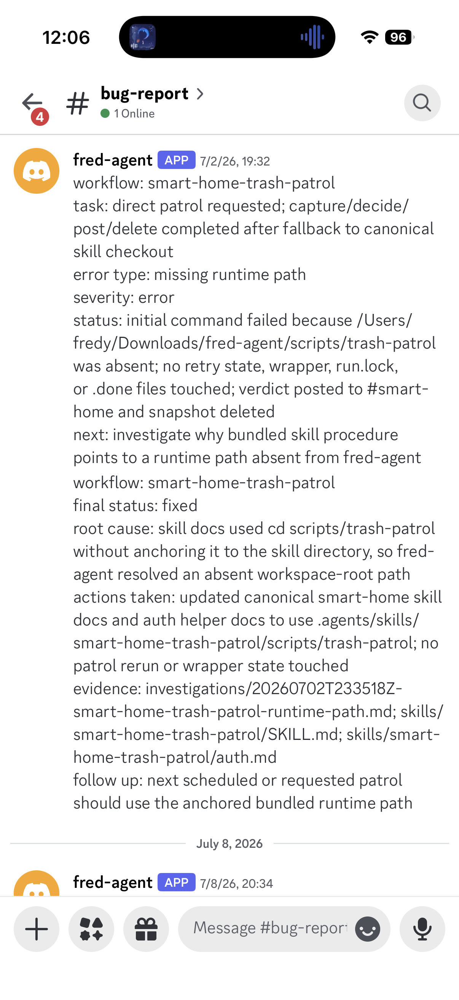
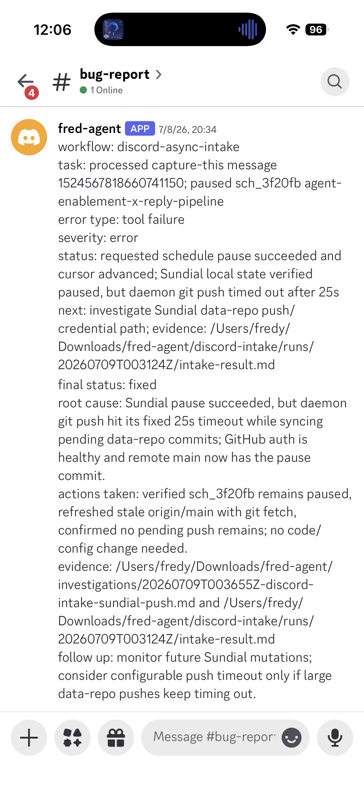
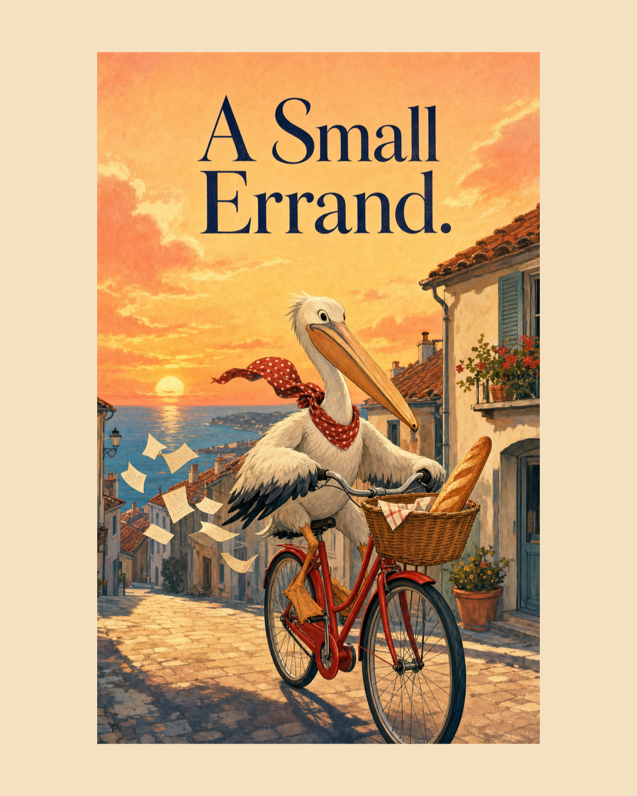
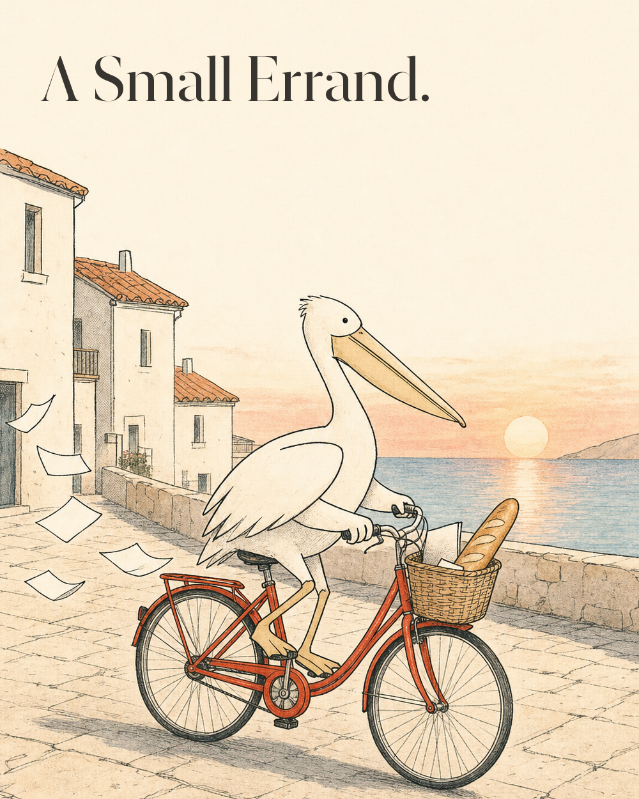
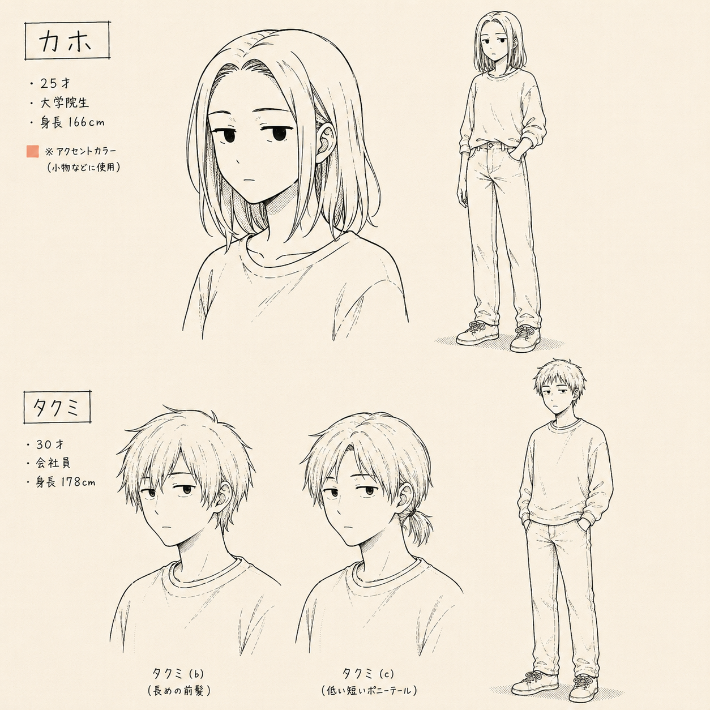
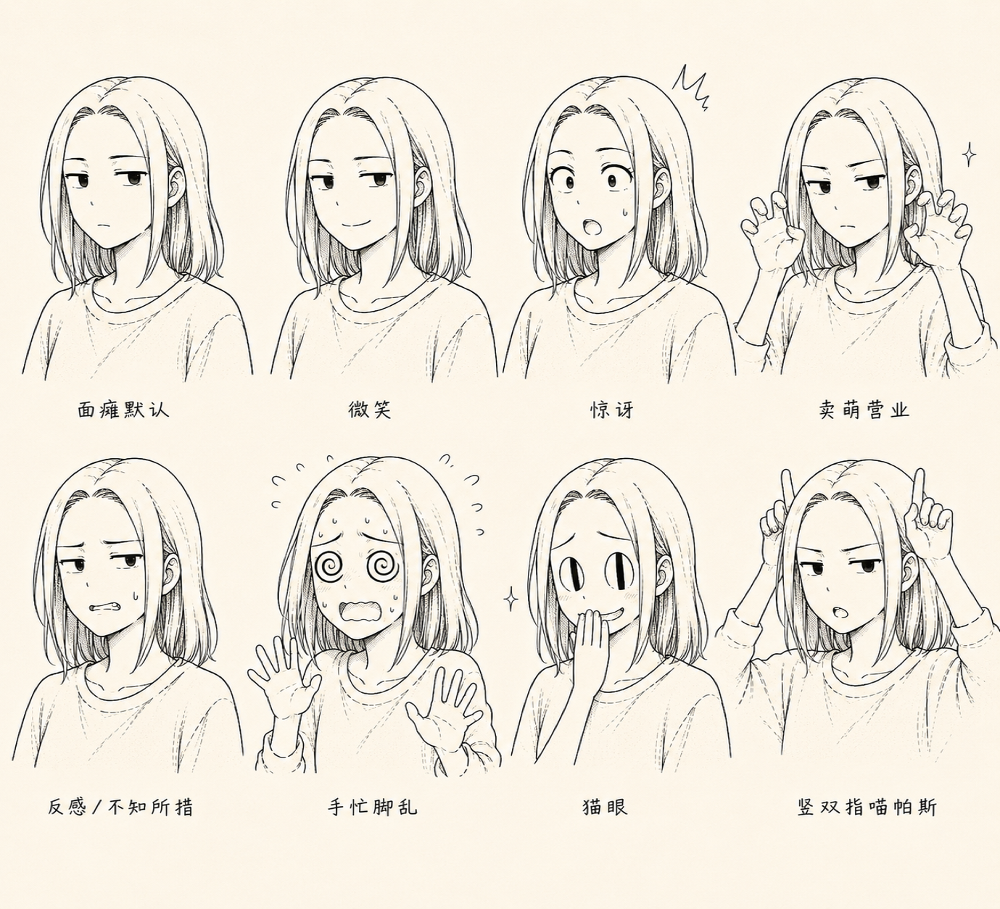
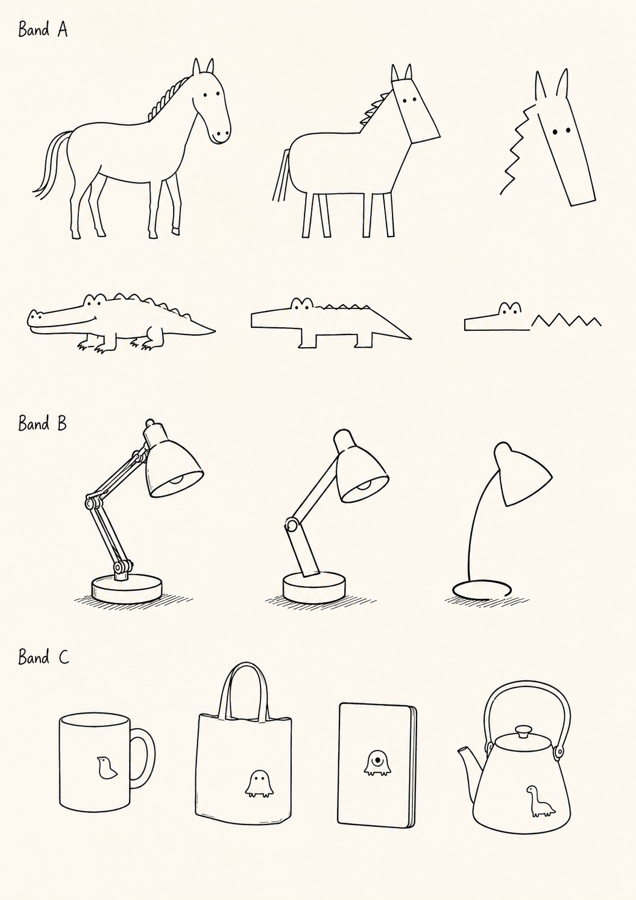

When Codex Gives You a Call
Recorded runWhat happens
Codex calls me. Calling is not what makes it a bespoke agent; it is a capability a general-purpose agent can use instead of waiting for me to open a chat window. I send a YouTube link by message; it understands the video, asks for a tapback, and writes the approved artifact into my technical-reading system.
The call is the opening, not the container. The same task keeps its context as it moves from voice to message, video, approval, and a durable record.
Recipe
- general-purpose agent
- voice call
- message handoff
- video understanding
- human approval
- Notion record
What to notice
- The agent can initiate a real phone call instead of waiting inside a chat window.
- The same task moves from voice to message without losing context.
- Approval is lightweight, explicit, and followed by durable state.
The House Has a Small, Boring Problem
Recorded run
What happens
Sundial wakes the workflow near sunset. A doorbell frame, the local collection rule, and a bounded judgment answer one question: do the bins need attention now?
The system posts a short verdict and deletes the temporary capture.
Recipe
- solar trigger
- doorbell capture
- local rule and visual judgment
- short Discord verdict
- cleanup
What to notice
- The trigger follows the obligation, not a generic schedule.
- Unclear scenes produce uncertainty, not a guess.
- The final message is smaller than the reasoning behind it.
Think. Dump. Forget.
Recorded run
What happens
I drop whatever I have—an image, video, URL, audio clip, or half-formed thought—into one Discord channel before I have to choose a database, tag, or final form. The system stages it, understands what matters, and turns the drop into durable context an agent can inherit later.
Each drop closes the context gap between human and agent. Capture becomes forgettable; the context does not.
Recipe
- thought · image · video · URL · audio
- one low-effort drop
- stage before expiry
- understand and organize
- human-agent context sync
- 🤞 status receipt
What to notice
- Capture asks for no destination, tag, or final form.
- Images, videos, URLs, and audio clips become shared agent context.
- The human can forget the intake step without losing the thought.
Failure Should Leave a Forwarding Address
Recorded run


What happens
The workflow preserves retry state, saves a local evidence note, and posts a concise digest. If diagnosis is needed, a separate investigator works under a recursion guard and returns with a final status.
The human learns what did not happen and what comes next—not merely that a log exists.
Recipe
- failure
- preserve retry state
- save evidence
- concise human digest
- guarded investigation
- final status
What to notice
- Failed side effects do not advance completion state.
- Routine no-ops and clear rate limits avoid needless investigation.
- The final message closes the human-visible loop.
A Taste Against AI Slop
Controlled comparisonCreate a 4:5 editorial illustration of a pelican riding a red bicycle through a seaside town at sunset. A baguette sticks out of the front basket, and several loose papers trail behind in the wind. Add the title: “A Small Errand.”


Canonical settei library
The system does not rely on prose alone. When a recurring subject appears, the agent can look up a visual source of truth.



What happens
Two GPT-5.6 runs receive the same short prompt. The first has no personal guide. The second can read Fred’s Visual Design Guide. The subject, wording, model, and aspect ratio stay fixed.
The baseline is attractive and complete. It is also familiar enough to belong almost anywhere. The guided version changes the line, hierarchy, density, and temperature—not simply the palette—until the image belongs here.
For recurring subjects, canonical settei sheets keep identity and abstraction consistent across sessions. The Article Style Guide holds the same kind of memory for prose: what to notice, what to compress, and which rough edges should remain.
Recipe
- core intent + human point
- adaptable visual grammar
- canonical settei masters
- reusable semantic tokens
- textual voice + guardrails
What to notice
- The baseline is not sabotaged; it is polished, coherent, and generic.
- The guided version changes composition and mark-making before it changes color.
- Visual masters anchor recurring subjects; the wider guides carry reasons and boundaries, not one mandatory look or voice.
The task should survive the change
Fred Agent is not a bespoke agent. It is the enablement layer around any capable agent: the handles that let it arrive, inherit, act, and stop.
The agent can change. The task should survive it.